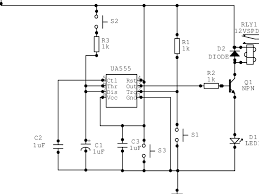

CSE110 Team Project: Productivity App

Meeting Topic: Brainstorming Session
Date: April 12, 2025
Attendance
- TianLin Zhao
- Alice Smith
- Bob Johnson
- Jamie Lee
Agenda
- Introduce project goals
- Share initial ideas for productivity app
- Assign initial roles and tasks
Unfinished Business
- Finalize the app's main feature set
- Create team GitHub repository
New Business
- Decide on frontend and backend technologies
- Sketch out app layout and user flow
- Set deadlines for first development sprint
Comments / Questions / Concerns
- TianLin: Should we include a focus timer feature?
- Alice: Can we use free APIs to support productivity tracking?
- Jamie: Is everyone comfortable with using Git/GitHub?